Planetas Rocosos
Un tour por las superficies de los cuerpos rocosos del Sistema Solar: Mercurio, Venus, la Luna, Marte y las lunas de los gigantes. Los mismos cuatro procesos geológicos de la Tierra, más algunos que la Tierra no tiene: contracción global, criotectonismo y meteorización espacial. Y una palabra que se repite en todas partes: resonancia.
La clase pasada estudiamos la Tierra como planeta y sus cuatro procesos geológicos: impactos, volcanismo, tectonismo y erosión. Esta clase aplica ese mismo lente al resto del Sistema Solar: ¿por qué ninguna otra superficie se parece a la nuestra? El recorrido va de adentro hacia afuera y deja un patrón claro: cada cuerpo es un experimento natural donde algunos procesos se apagaron (Mercurio sin tectónica, Venus sin campo magnético, Marte sin atmósfera protectora) y otros aparecieron (arrugamiento global, océanos bajo hielo, volcanes de roca fundida en una luna diminuta). La herramienta unificadora es la física de siempre: momento angular, fuerzas de marea y, sobre todo, resonancias orbitales, esos estados de acoplamiento de los que un cuerpo ya no puede escapar.
El tour y la caja de herramientas geológica
Dos familias de mundos y cuatro procesos para leer cualquier superficie.
El Sistema Solar a escala (en tamaños, no en distancias) muestra dos grupos nítidos: los planetas interiores —sólidos, pequeños, separados por el cinturón de asteroides— y los gigantes gaseosos. Esta clase se concentra en los sólidos: los cuatro planetas rocosos y las lunas de los gigantes, que también son cuerpos rocosos (o de hielo, que a estas temperaturas se comporta como roca).
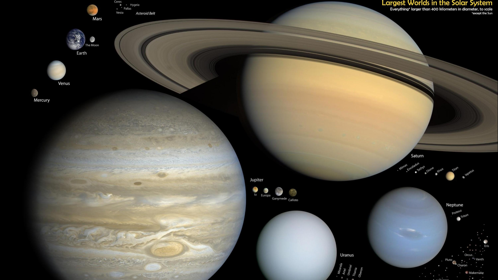
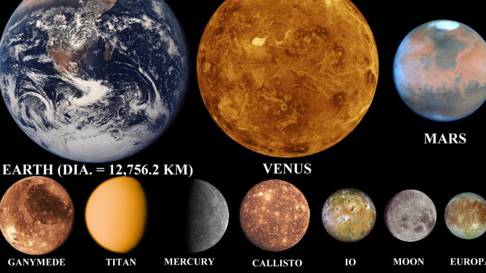
Los cuatro procesos (más los que la Tierra no tiene)
- Impactos: cráteres; el proceso universal, presente en todos los cuerpos.
- Volcanismo: salida de material interno fundido (roca… o hielo derretido: criovolcanismo).
- Tectonismo: movimiento de placas; requiere escalas grandes y es lentísimo de medir (GPS de precisión en el piso).
- Erosión: requiere un fluido (atmósfera o agua); donde no hay atmósfera, casi no hay erosión.
El tour agrega procesos nuevos que la Tierra no exhibe: el arrugamiento por contracción global (Mercurio), el criotectonismo sobre océanos subterráneos (Europa) y la meteorización espacial (space weathering): partículas del Sol que chocan y reaccionan químicamente con superficies sin atmósfera, cambiando sus colores.
Contar cráteres es un proceso de conteo tipo Poisson: el flujo de impactos es aproximadamente constante en el tiempo, así que la densidad de cráteres acumulados es proporcional a la edad de exposición de la superficie. Una superficie saturada de cráteres (Calisto, la Luna) es vieja; una casi limpia (Europa, Venus) fue «repavimentada» hace poco. Es el mismo principio que estimar el tiempo de servicio de una pieza contando picaduras de corrosión.
Mercurio: resonancia 3:2 y un planeta arrugado
Un núcleo enorme, una rotación atrapada y cicatrices de contracción global.
Por fuera, Mercurio parece la Luna: mismos colores, mismo tipo de roca, superficie saturada de cráteres. Pero su densidad media es mucho más alta, señal de un núcleo metálico gigantesco: hoy se estima en cerca del 80% del radio del planeta. Incluso se cree que tiene una interfaz líquida entre núcleo y manto, como el núcleo externo terrestre. ¿Cómo lo sabemos sin sismógrafos? Porque la capa externa «bailotea» levemente sobre el núcleo mientras rota, y ese bamboleo sí es medible. Para el detalle fino harían falta estaciones sismográficas que no tenemos.
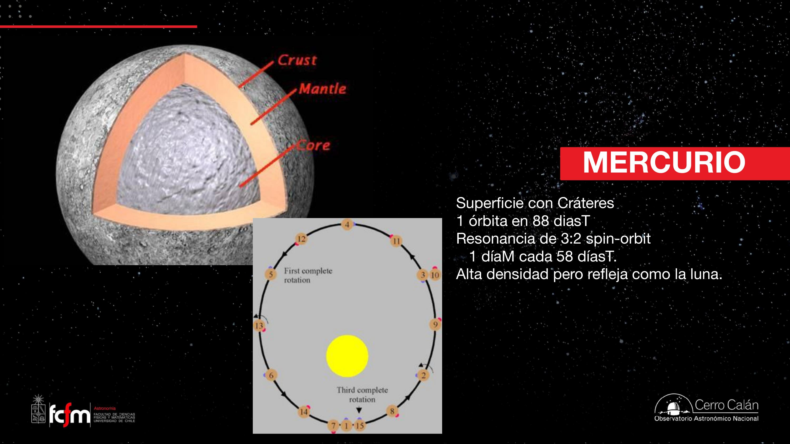
La resonancia spin-órbita 3:2
Mercurio orbita el Sol en 88 días terrestres y rota sobre su eje en 58 días terrestres (dato de clase; el valor fino es 58,6). La gracia está en el cociente: . El planeta rota exactamente 3 veces cada 2 órbitas. Por fuerzas de marea uno habría esperado que terminara síncrono (dándole siempre la misma cara al Sol, como la Luna a la Tierra): el Sol es enormemente más masivo y las mareas disipan energía empujando hacia ese estado de mínima disipación. Pero en el camino, Mercurio quedó atrapado en la resonancia 3:2 — un estado gravitacionalmente estable del que ya no puede salir: en cada perihelio el planeta presenta al Sol la misma orientación alternada, y ese acoplamiento lo mantiene fijo.
Una resonancia spin-órbita es el análogo mecánico de un PLL (phase-locked loop): un oscilador (la rotación) queda enganchado a una referencia (la órbita) en una razón entera de frecuencias, y pequeñas perturbaciones son corregidas por el torque gravitacional sobre la deformación de marea. Igual que un PLL puede engancharse en un armónico y no en la fundamental, Mercurio se enganchó en 3:2 y no en 1:1. En exoplanetas ni siquiera podemos medir la rotación: se asume sincronía para cuerpos cercanos a su estrella, pero Mercurio es el contraejemplo en nuestra propia casa.
Las cicatrices de un planeta que se encogió
En los acercamientos (misión MESSENGER) se ven cráteres, sí, pero también largas «cordilleras» de decenas de kilómetros. No pueden ser tectonismo —esas escalas de 10–20 km son demasiado pequeñas para placas— ni erosión (no hay atmósfera). Son escarpes de contracción: el núcleo metálico y el manto rocoso tienen composiciones distintas y se contrajeron de forma diferencial al enfriarse. La cáscara externa, ya rígida, quedó grande para el interior encogido y se arrugó. Las cicatrices, repartidas por todo el planeta, dan cuenta de una contracción global de 1 a 2 km. Es un proceso terminado, no activo — y un proceso que la Tierra no tiene.
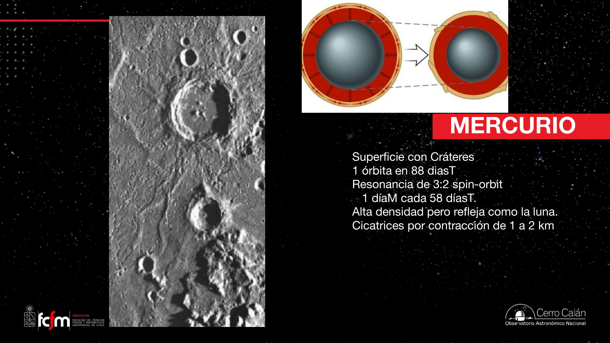
El Sol no genera impactos en Mercurio, pero sí explica su composición: en esa zona tan caliente del disco protoplanetario los volátiles no condensaron, quedando los elementos pesados — por eso el núcleo relativo tan grande. También impide retener atmósfera. Los porqués se ven en el Módulo 2 (formación).
Venus: el gemelo que no fue
Unimodal, joven, sin campo magnético y girando al revés, lentísimo.
Sobre el papel, Venus debería ser el gemelo de la Tierra: está al 70% de la distancia Tierra–Sol (0,7 UA) y tiene el 95% del radio terrestre. La frase de la clase: «si no hubiéramos tenido un Venus en nuestro Sistema Solar, no lo habríamos podido imaginar». Gran parte de lo exótico es atmosférico (próxima clase), pero la superficie ya da sorpresas.
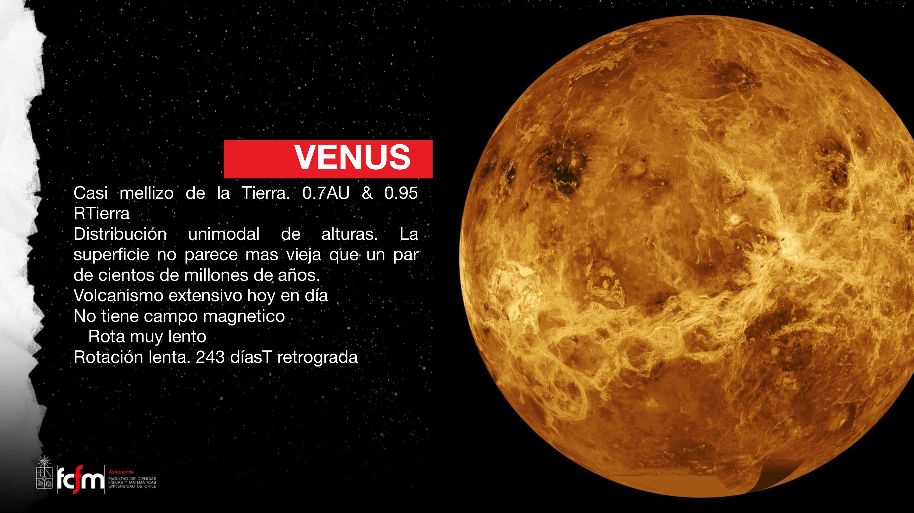
Unimodal vs. bimodal: la firma de los océanos que no hubo
Si graficas «área del planeta» versus «altura», la Tierra es bimodal: un máximo para los fondos oceánicos y otro para los continentes — la firma de tener dos tipos de corteza (oceánica y continental), producto de una tectónica lubricada por océanos. Venus es unimodal: un solo tipo de corteza. Hay indicios de tectonismo (patrones de «puzzle»), pero medirlo directamente es imposible sin GPS en superficie.
Cuando dos placas continentales chocan, la corteza se engruesa hacia arriba y hacia abajo: bajo el Everest hay un «anti-Everest» de raíz cortical (si solo se apilara hacia arriba quedaría un vacío por debajo). En Venus, con un solo tipo de placa, las zonas de choque engruesan y las de separación adelgazan la corteza — sin las zonas de subducción marcadas que tiene la Tierra.
Superficie joven y la hipótesis del borrón y cuenta nueva
Los planetas tienen todos ~4.500 millones de años (en el audio se transcribió «45 millones»; el valor correcto es 4.500 millones). Pero la superficie de Venus no parece más vieja que un par de cientos de millones de años — un 5% de la edad del planeta. En la Tierra encontramos rocas de 4.000 millones de años (Brasil, Australia); en Venus, nada tan antiguo. Una explicación posible (el profesor la presenta como hipótesis con detractores que a él le encanta): la repavimentación catastrófica (catastrophic resurfacing). La corteza unimodal acumula zonas gruesas y delgadas hasta que la irregularidad colapsa, el manto sale a la superficie y el planeta entero queda cubierto de lava: borrón y cuenta nueva, con el reloj de cráteres reiniciado en cero.
Sin dínamo y girando al revés: el comodín del impacto
Venus debe tener parte líquida en su interior (como la Tierra), pero no tiene campo magnético: rota tan lento que no hay suficiente convección organizada para el efecto dínamo. Un día venusino dura 243 días terrestres y la rotación es retrógrada: su vector de momento angular de rotación apunta opuesto al de la órbita. Todos los planetas orbitan en el mismo sentido (vectores orbitales casi paralelos — herencia del disco de formación); las rotaciones también, salvo excepciones como Venus.
El momento angular de rotación solo cambia si hay torque. Un planeta sin luna no tiene con qué frenarse o voltearse… salvo un impacto. Por eso el impacto es «el comodín»: con masa y ángulo adecuados puede explicar casi cualquier estado de rotación. Para Venus (vector de rotación invertido y casi nulo) la explicación estándar es un gran impacto pasado — que, a diferencia del de la Tierra, no dejó luna. La Tierra sí tiene torque permanente: el de las mareas lunares, que alarga nuestro día poco a poco (clase anterior).
La Luna: síncrona, pero no estática
Nacida de un impacto, acoplada por mareas, y con tres «peros» observables.
¿Por qué la Luna tuvo que nacer de un gran impacto y no ser simplemente capturada? Por conservación de momento angular: un cuerpo que llega desde afuera con cierta energía y momento angular, si nada se los quita, vuelve a salir. Para quedar en órbita necesita frenar — como las misiones a Marte, que rozan la atmósfera marciana (aerobraking) y disipan energía en calor. Un cuerpo tan grande como la Luna (~1/6 del radio terrestre) no tiene cómo deshacerse de tanto momento angular: se necesitarían cadenas improbables de intercambios con otros cuerpos previos. El impacto, en cambio, tiene grados de libertad de sobra (masa, ángulo, velocidad) y además la composición de las rocas lunares es consistente con la mezcla de los dos cuerpos que chocaron.
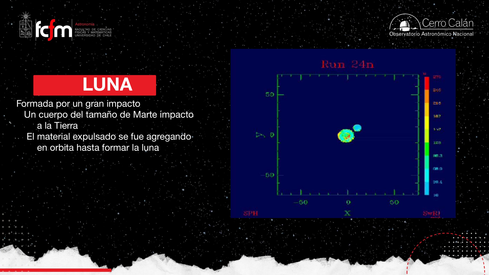
Rotación síncrona… con tres variaciones
La Luna rota a la misma velocidad angular con que se traslada (rotación síncrona, forzada por las mareas terrestres): 360° de rotación en una órbita, por eso muestra siempre la misma cara. Pero hay tres «peros» observables:
- No es siempre exactamente la misma cara. La órbita es excéntrica: por la 2.ª ley de Kepler la Luna se mueve más rápido en el perigeo y más lento en el apogeo, mientras su rotación es constante. Ese desfase deja «asomarse» un poco más allá del borde (libración en longitud). La inclinación de ~5° agrega el asomo en latitud.
- No es siempre el mismo tamaño. La misma excentricidad cambia la distancia: la Luna llena del perigeo se ve mayor que la del apogeo — aunque a ojo desnudo, sin una referencia al lado, la diferencia es invisible.
- No es siempre la misma iluminación: las fases, que dependen de la geometría Sol–Tierra–Luna, no de la rotación.
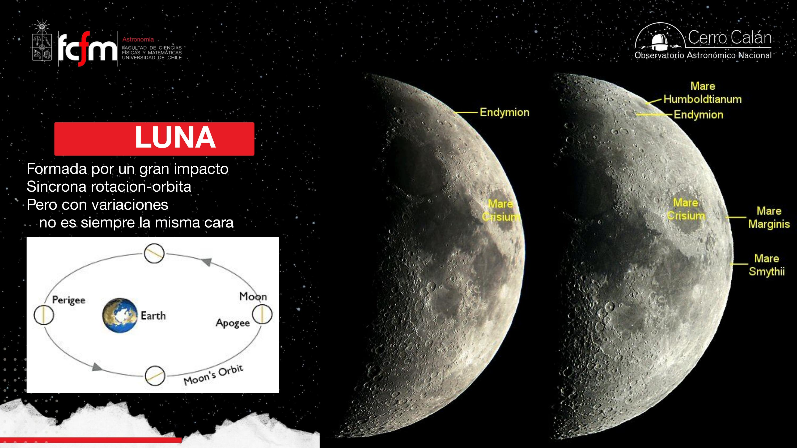
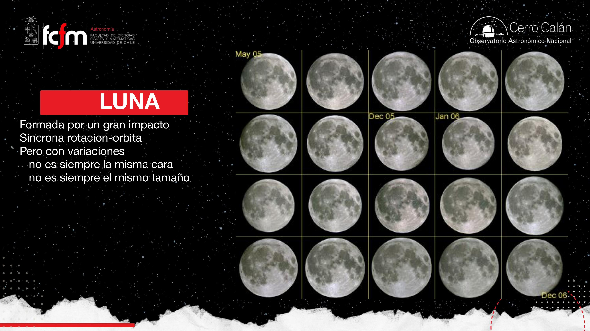
Dos relojes que no coinciden: órbita y fases
El período orbital (volver al mismo punto de la órbita) y el período de fases (de luna nueva a luna nueva) no pueden ser iguales: mientras la Luna completa su vuelta, la Tierra avanzó en su órbita alrededor del Sol, así que la alineación Sol–Tierra–Luna se corre. Como complemento externo: el período sidéreo es 27,3 días y el sinódico (fases) 29,5 días. La famosa superluna es cuando dos instantes — el perigeo y la luna llena exacta — casi coinciden. «La mayor del siglo» solo significa que la coincidencia fue la más fina; la diferencia visual entre superlunas de años distintos es imperceptible.
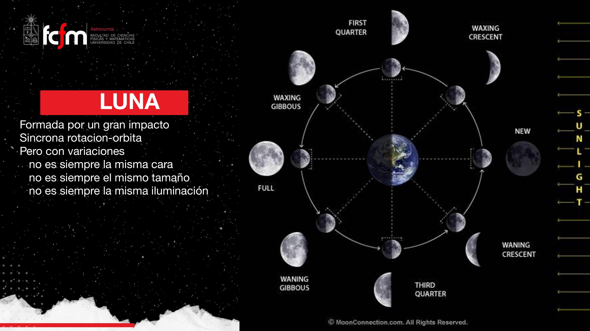
La libración es una modulación de fase superpuesta a una portadora: la rotación es constante (portadora), la velocidad orbital oscila con la anomalía (señal moduladora), y el observador ve el residuo — un bamboleo periódico de ±8° aprox. Es el mismo análisis de un jitter determinístico en un reloj. Gracias a él vemos, acumulado, cerca del 59% de la superficie lunar (dato externo complementario).
Marte I: de los canales de Lowell a los arándanos
La primera «detección» de vida extraterrestre y la evidencia real de agua pasada.
Antes de la fotografía astronómica, el astrónomo dibujaba lo que veía por el ocular — con toda la subjetividad que eso implica. El grupo de Percival Lowell (~1901; en el audio quedó «Percival Lowe») produjo mapas de Marte sorprendentemente certeros en sus manchas… pero cruzados por líneas rectas que interpretaron como canales artificiales: ningún proceso geológico natural traza rectas de esa escala, así que la conclusión «lógica» fue vida inteligente. Es quizá la primera vez que se postula vida extraterrestre a partir de una observación científica y no de un mito — y alimentó medio siglo de imaginario (la carrera espacial incluida). Las líneas eran artefactos: imagen borrosa, interpretación sobreajustada, quizá hasta reflejos en la pupila.
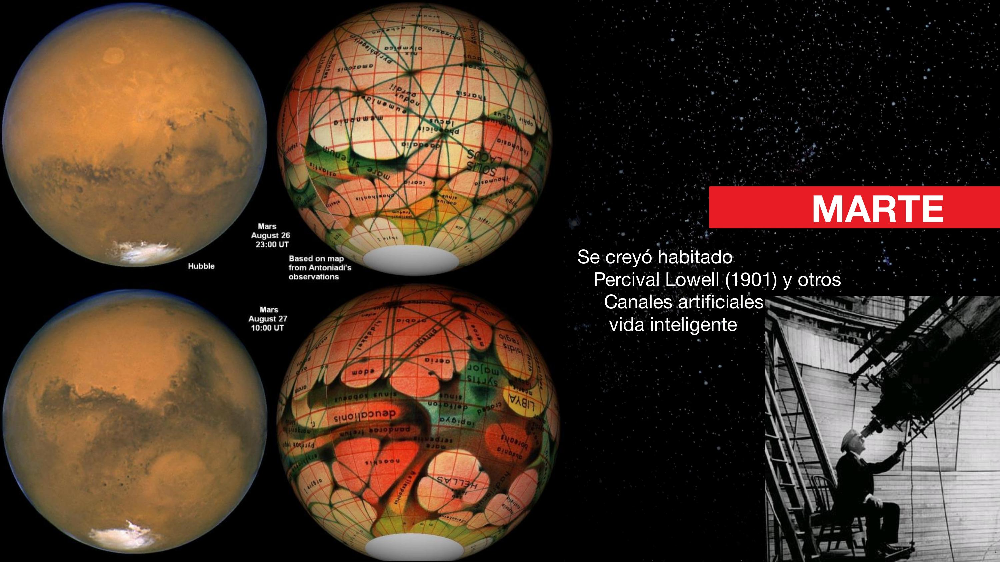
Los canales de Lowell son un caso clásico de sobreajuste perceptual con bajo SNR: ante una imagen en el límite de resolución, el cerebro «completa» estructura que no está en los datos. La fotografía eliminó al intérprete del lazo — el equivalente a reemplazar la inspección visual por un registro instrumental reproducible.
El planeta mejor estudiado (después de casa)
Marte es hoy el segundo planeta mejor estudiado in situ: decenas de misiones exitosas, más de diez activas. Ya Mariner 9 (1972) mostró algo que la Luna no tiene: flujos catastróficos — cauces enormes tallados por un fluido. ¿Agua? En 1972 solo se podía decir «un líquido». La confirmación llegó con los Mars Rovers (2004+): Spirit y Opportunity encontraron los arándanos marcianos (blueberries) — esférulas del tamaño, color y forma de un arándano. Su mineralogía (el profesor la describe como un tipo de arcilla; en la literatura son concreciones de hematita) solo se forma con agua líquida, y más aún, con un pH acotado: sin traer muestras, ¡pudimos estimar el pH del agua marciana antigua! La forma redondeada es la de las piedras de río. A eso se suman deltas fósiles inequívocos: desde 2004, nadie discute que hubo agua líquida en Marte.
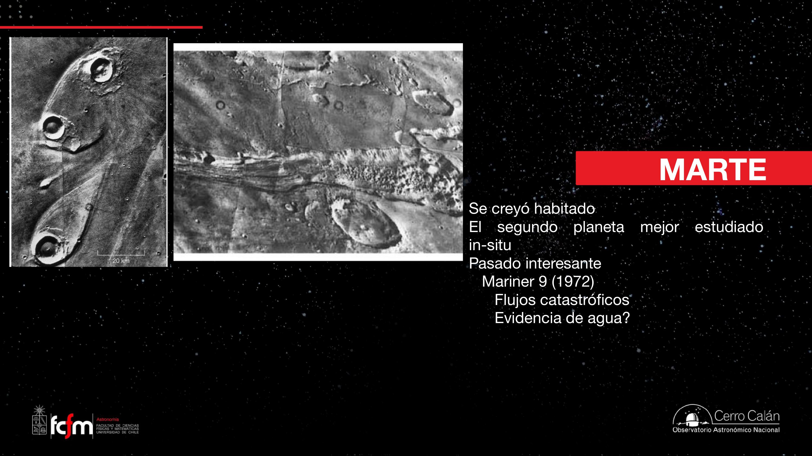
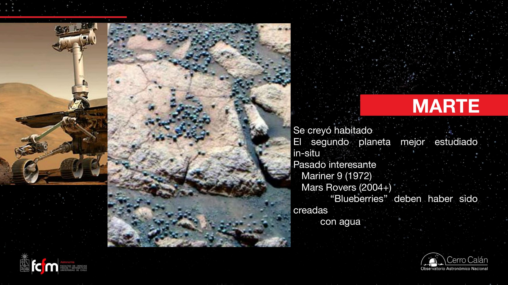
¿Cuánta agua? Océano vs. ríos y lagos
La pelea abierta no es si hubo agua sino cuánta: ¿un gran océano boreal o solo ríos y lagos? La clase señala que va ganando el Marte «seco», de ríos y lagos — no un planeta tan húmedo como la Tierra. La diferencia importa para la habitabilidad pasada.
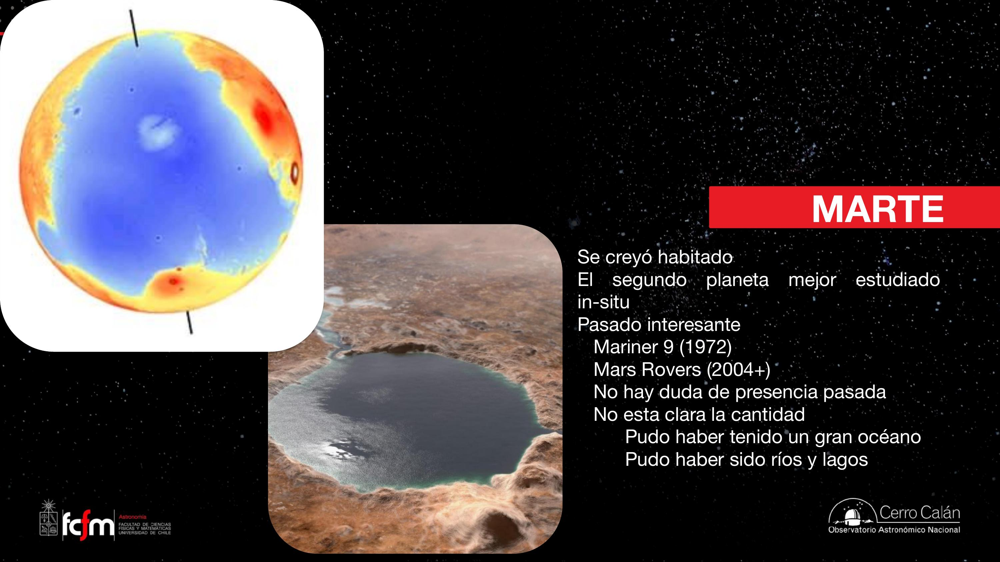
Marte II: ¿dónde se fue el agua?
Una cadena causal: enfriamiento → sin dínamo → sin escudo → escape del hidrógeno.
La historia del agua marciana es una cadena causal elegante. Marte es más chico que la Tierra, y los cuerpos chicos se enfrían más rápido (la taza se enfría antes que la tetera: más superficie por unidad de volumen). Al enfriarse el interior, se apaga la convección del núcleo líquido → desaparece el campo magnético → las partículas cargadas del viento solar (protones, núcleos de hidrógeno) dejan de ser desviadas y entran de lleno a la atmósfera.
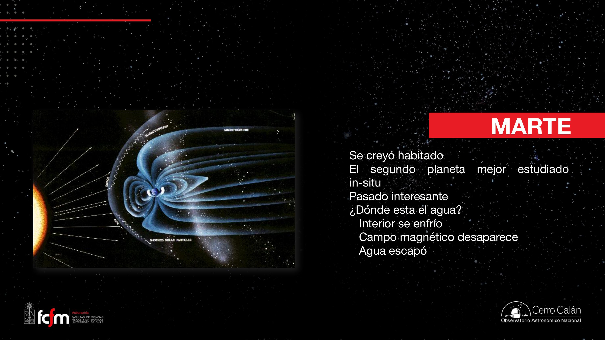
Un protón solar rompe la molécula de H₂O. Luego, chocando: contra el H (masas comparables) es como chocar contra un compañero — sale disparado y escapa; contra el O (16 veces más masivo) es como lanzarse contra un auto — ni se inmuta. Resultado: Marte pierde selectivamente el hidrógeno, y el oxígeno sobrante oxida la superficie. El rojo de Marte es, literalmente, óxido: la lápida de su agua.
El agua de hoy: polo sur, laderas y protección planetaria
No toda el agua se fue. En el polo sur hay un gran depósito congelado: suficiente para cubrir el planeta con un océano global de ~20 metros. Suena mucho, pero el océano terrestre promedia ~4.000 metros: es poco en comparación. ¿Y agua líquida hoy? En laderas de cráteres hay ventisqueros (mezclas de H₂O y CO₂ congelados) donde aparecen y desaparecen manchas oscuras estacionales. Algunos grupos sostienen que requieren agua líquida subsuperficial; otros, que no. La espectroscopía no resuelve: el píxel es demasiado grande (baja resolución espacial ⇒ identificación ambigua de minerales).
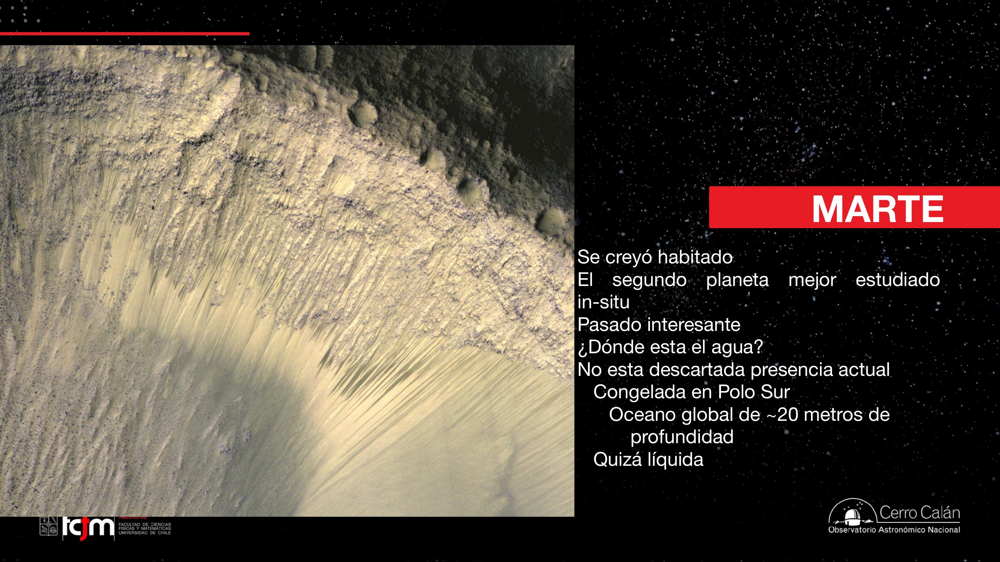
Si hay agua líquida, puede haber vida ahora. Llegar con una bacteria terrestre podría «dejarla embarrada» — contaminar irreversiblemente el experimento natural. Los rovers se esterilizan, pero siempre resiste algún microbio; la única garantía sería hornear el rover a ~1000 °C por horas, lo que multiplicaría el presupuesto. Por ahora esas zonas interesantes se miran de lejos: protección planetaria.
Exploración: drones, plantas nucleares y láseres
Cada misión sube la apuesta tecnológica: ya voló un dron en la tenue atmósfera marciana (Ingenuity), y los rovers nuevos cambiaron paneles solares por generadores nucleares con energía de sobra — por ejemplo para un láser que vaporiza roca: en gas es fácil identificar elementos por sus líneas espectrales; en sólido no. Solución: convertir el sólido en gas y mirar el destello con una cámara espectroscópica. La clase también menciona las manchas de leopardo (leopard spots) halladas por el último rover: patrones que en la Tierra son evidencia de metabolismo bacteriano. Podría ser lo más cercano a una bioseñal marciana — la próxima década puede traer noticias grandes: hoy tenemos un planeta con vida confirmada y ninguno con vida descartada.
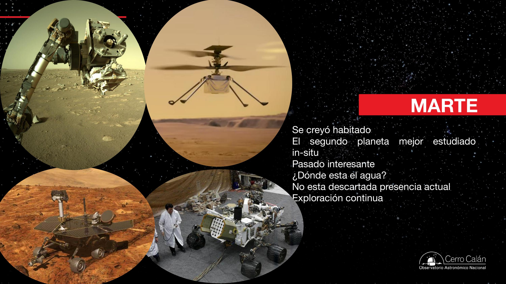
Marte tiene además dos satélites pequeños: Deimos se aleja y Fobos decae — las dos caras de la fuerza de marea vistas la clase pasada. Fobos terminará impactando o desintegrándose.
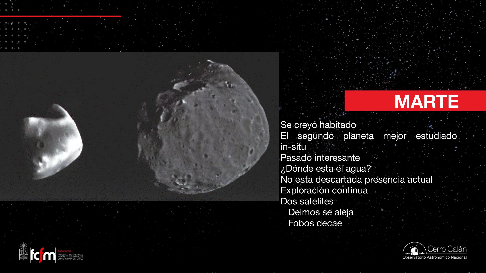
Lunas de Júpiter: el gradiente de las mareas
Cuatro mundos galileanos, de la calma craterizada al volcán permanente.
Del cinturón de asteroides hacia afuera, el H₂O deja de ser escaso (los porqués, en el Módulo 2): abundan las lunas de hielo. En Júpiter, cuatro son lo bastante grandes para ser esféricas — las galileanas — y son radicalmente distintas entre sí. El orden importa: de afuera hacia adentro se ponen cada vez más «interesantes».
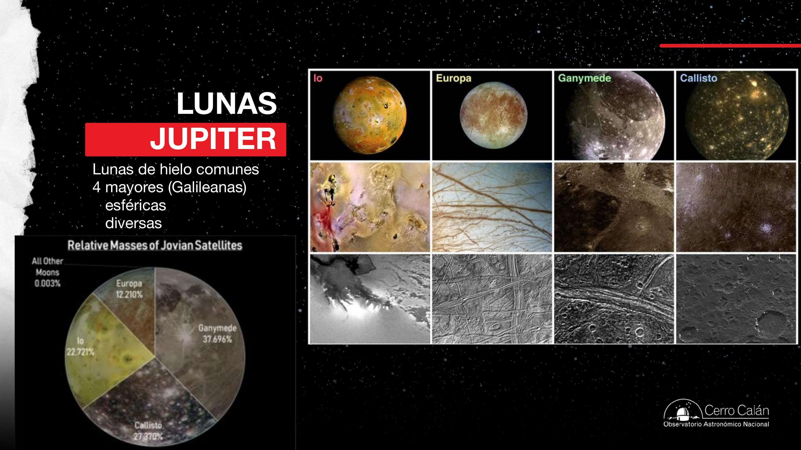
- Calisto (la más externa): luna de hielo «común y corriente», saturada de cráteres — superficie vieja, sin actividad.
- Ganímedes: la luna más grande del Sistema Solar; ya muestra manchas y terrenos renovados — algo de temperatura hubo (para «volcanismo» de hielo basta derretirlo, no se necesita magma).
- Europa: superficie llena de grietas que se cruzan y recruzan, casi sin cráteres — un mundo activo.
- Ío (la más interna): volcánicamente activa con roca fundida, volcanes en erupción por montones, sin nada de agua.
Europa: criotectonismo sobre un océano
Las grietas de Europa son tectonismo… pero criotectonismo: una cáscara de hielo (~10 km) flotando sobre un océano líquido global (~100 km). En agua, las celdas de convección pueden reorganizarse sin restricción — por eso las grietas se rompen y contra-rompen en todas direcciones, a diferencia del tectonismo de roca, estable por eones (Hawái lleva toda su historia moviéndose en el mismo sentido). Los cráteres no sobreviven: la superficie se recicla. Y el volumen de agua de Europa supera toda el agua de la Tierra, en un cuerpo más chico que la Luna. Agua entre 0 y 100 °C, posibles fuentes termales en el fondo… y la pregunta obvia: ¿vida? Otro lugar que no queremos tocar todavía.
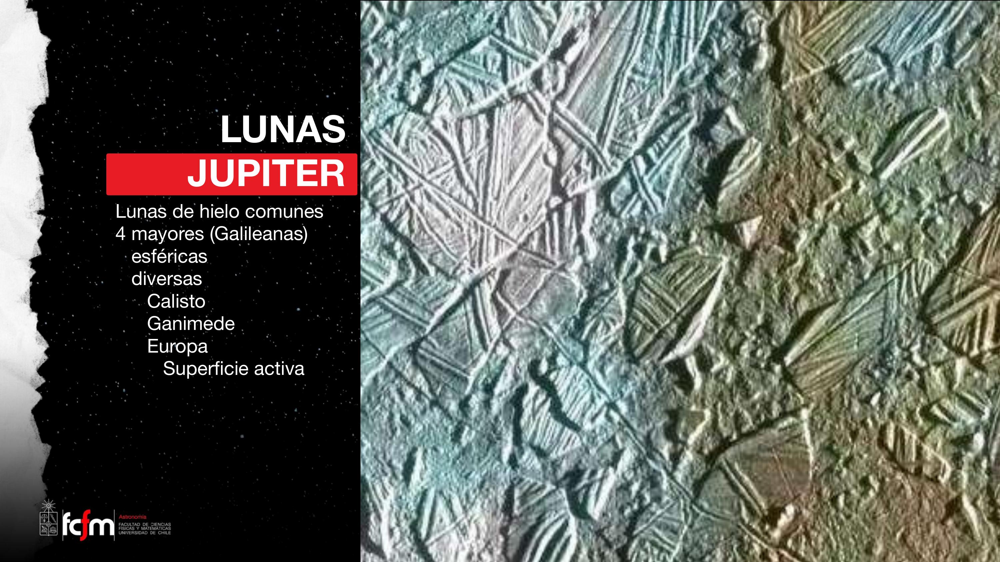
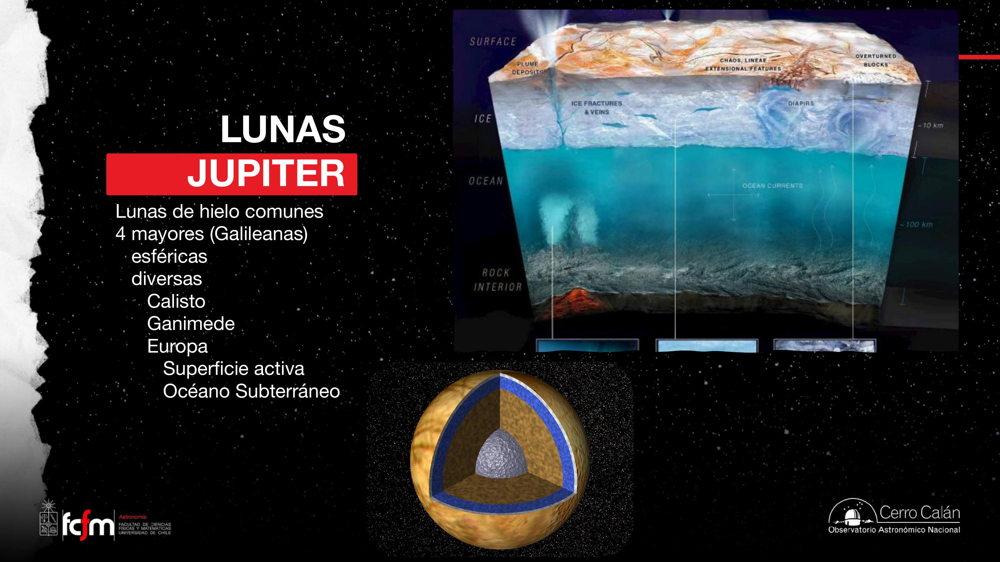
Se cree que Europa tiene géiseres (detecciones con mucho ruido de fondo, no 100% confirmadas). La misión Europa Clipper — ya en camino, llegando hacia 2030 — mapeará la superficie completa, medirá el espesor exacto de hielo y océano, y va equipada mitad con instrumentos de imagen remota, mitad con instrumentos de muestreo por si puede atravesar un géiser y analizar lo que sale.
Ío y la resonancia de Laplace: el papá que amasa
¿Cómo mantienen calor interno unas lunas más pequeñas que la nuestra (que es fría y muerta)? Las tres interiores están en resonancia orbital 4:2:1: por cada órbita de Ganímedes, Europa da 2 y Ío da 4. Una resonancia de tres cuerpos, mucho más rígida que una de dos: ninguna puede escapar. Júpiter «amasa» a Ío con fuerzas de marea — la aprieta y suelta constantemente, disipando energía como calor interno. Ío querría alejarse a una órbita tranquila, pero para eso tendría que mover también a Europa y a Ganímedes, y Ganímedes, el hermano grande, no se deja empujar. El resultado es un gradiente térmico de marea: Ío perdió toda su agua (se evaporó y escapó) y mantiene roca fundida; Europa alcanzó a derretir su capa de agua; Ganímedes apenas; Calisto nada.
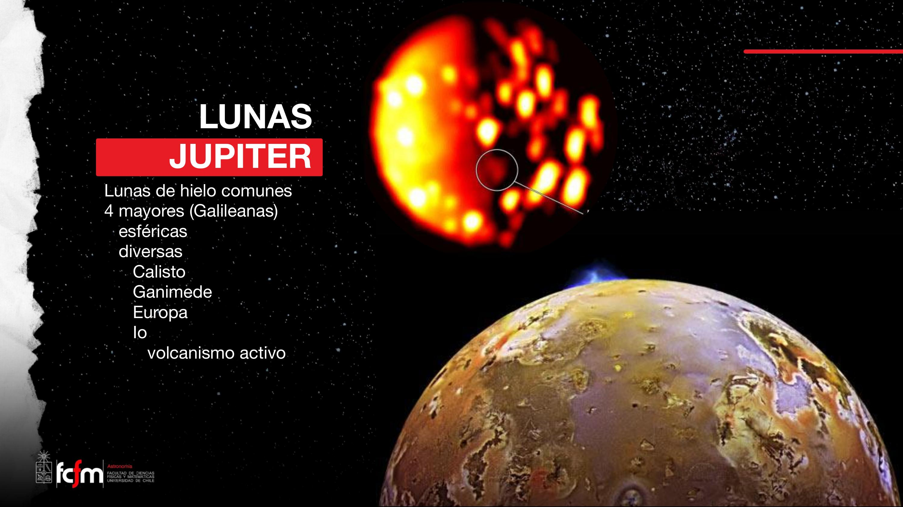
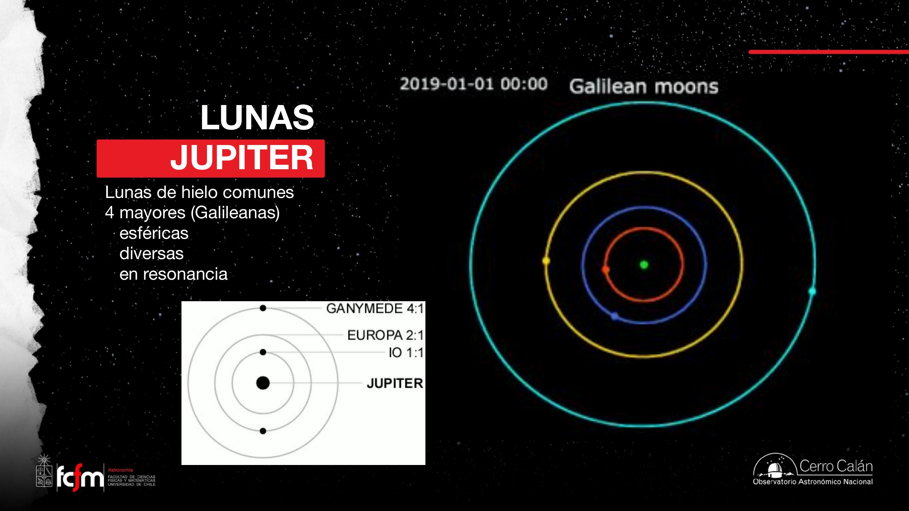
Estas lunas viven dentro del campo magnético gigante de Júpiter, que las protege del viento solar. Ío, con sus volcanes, inyecta tantos iones que afecta visiblemente la magnetósfera joviana. Y ojo: el magnetismo solo desvía partículas cargadas — no habría podido retener moléculas neutras de agua en Ío.
Satélites de Saturno: géiseres, lagos y rarezas
Más lunas ⇒ más anillos. Y un catálogo de mundos únicos.
Saturno tiene más lunas que Júpiter — siete esféricas — y esa abundancia explica sus anillos: las partículas de los anillos (desde polvo hasta «microbuses») serían inestables si no fuera por las lunas que las mantienen alineadas; las divisiones de los anillos corresponden a resonancias con lunas. Más lunas, más anillos.
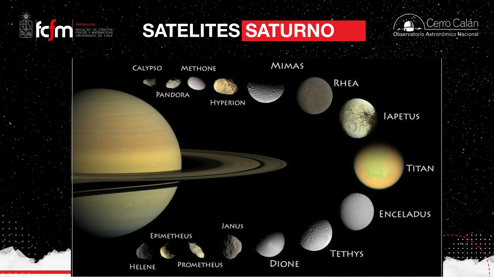
- Encélado: las «rayas de tigre» azuladas resultaron ser géiseres reales (misión Cassini, que los fotografió pero no iba preparada para muestrearlos). Debajo: otro océano global, más delgado que el de Europa.
- Titán: atmósfera densísima y opaca (detalle la próxima clase). La sonda Huygens aterrizó y describió la zona como «lodosa». Tiene lagos de metano y etano a −170 °C: junto con la Tierra, el único cuerpo del Sistema Solar con líquidos estables en superficie. A esa temperatura el agua no puede ser líquida — el rol del agua lo juegan los hidrocarburos.
- Jápeto: una cordillera ecuatorial que lo circunda («como si lo hubieran partido y pegado a la rápida») — quizá contracción con preponderancia ecuatorial por rotación alta pasada; hay varias hipótesis. Además, dos hemisferios de color opuesto: meteorización espacial (space weathering): partículas solares que interactúan química y mecánicamente con la superficie descubierta.
- Mimas: la «Estrella de la Muerte» (cráter Herschel).
- Hiperión: el mayor de los irregulares, con densidad la mitad de la del agua: una piedra pómez gigante llena de vacíos. Por ahora, único en su tipo.
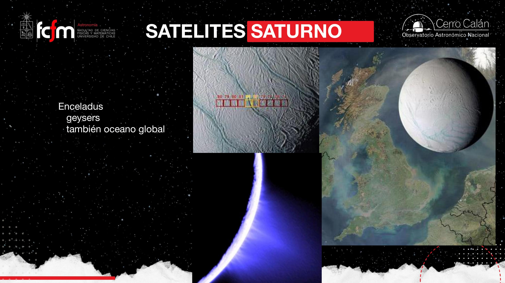
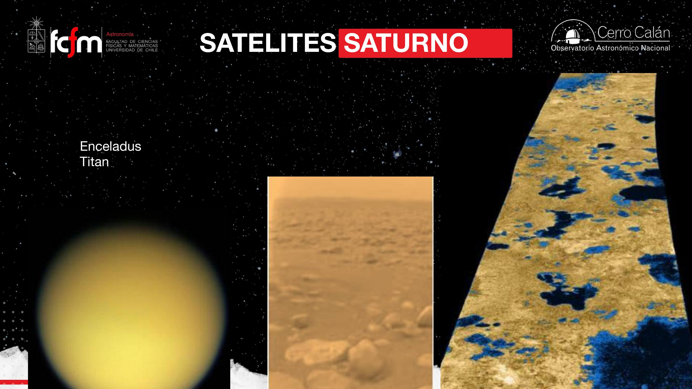
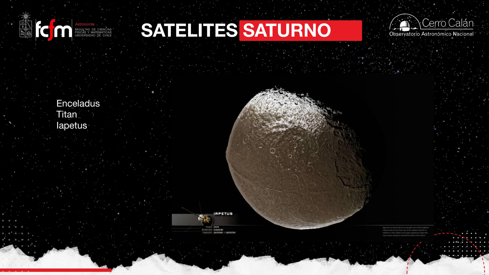
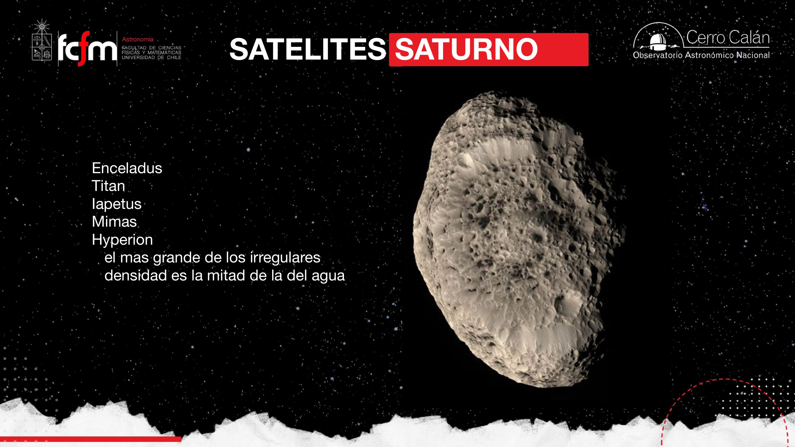
Miranda, Tritón y Plutón: los confines
Un acantilado de 20 km, piel de melón y misterios sin proceso conocido.
En Urano destaca Miranda (su único satélite regular esférico mostrado en clase): parece armada «a la rápida», con parches rayados que no calzan… y el mayor acantilado del Sistema Solar: Verona Rupes, ~20 km de caída vertical — dos Everest apilados. Con la gravedad diminuta de Miranda, caerías 12 minutos y llegarías abajo a unos 200 km/h: el profesor sugiere que un buen sistema de airbags bastaría (turismo aventura del futuro).
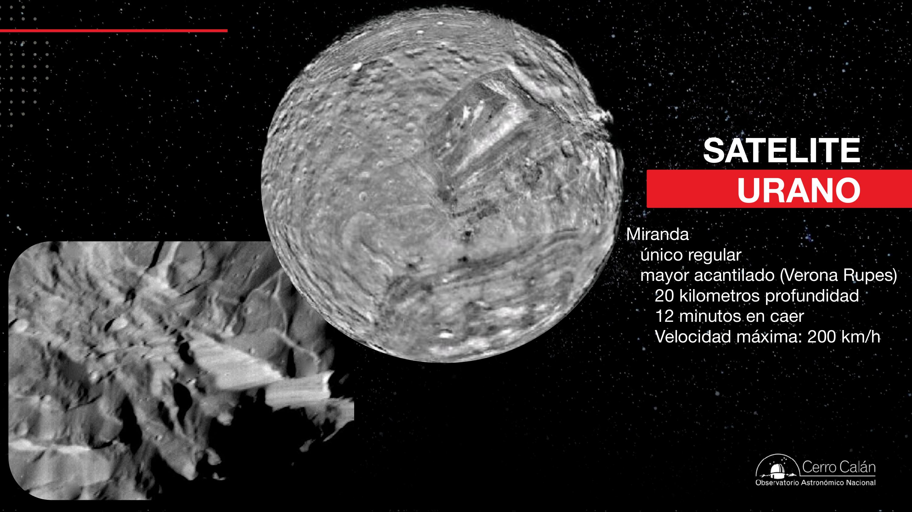
En Neptuno, Tritón exhibe el «proceso geológico del melón calameño» (broma del profesor): una textura de piel de melón (cantaloupe terrain) que aparece en una zona y no en otra, posiblemente ligada a las temperaturas extremas de allá afuera. Con solo un puñado de imágenes (Voyager 2), no se puede estudiar mucho más.
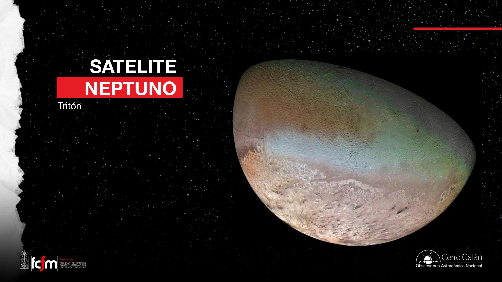
Plutón tiene un satélite enorme en proporción: Caronte. Cuando New Horizons llegó (2015) con imágenes de alta resolución, los científicos quedaron descolocados: superficies planas que de pronto se llenan de irregularidades, bloques de hielo que parecen «flotados» — no hay proceso geológico conocido que explique cómodamente lo que se ve. Los misterios siguen abiertos.
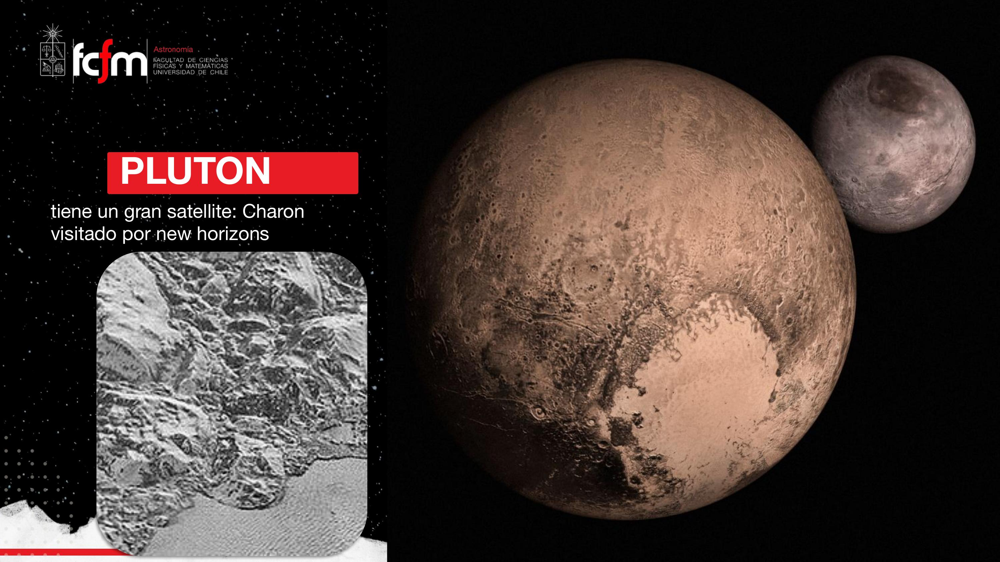
Interiores: homogéneos y diferenciados
Sin sismógrafos, la gravedad es el único estetoscopio.
De los interiores sabemos poco: sismología solo tenemos en la Tierra y Marte (misión InSight). Para el resto, se mide el campo gravitacional del cuerpo (cómo desvía a las sondas) y de ahí se infiere si es homogéneo o diferenciado. La diferenciación — lo pesado al centro, lo liviano arriba — requiere que el cuerpo haya estado fundido: por eso los cuerpos chicos, que se enfrían rápido, tienden a ser homogéneos. La Luna, relativamente grande pero sin fuentes de calor extra, quedó poco diferenciada (núcleo pequeño); Europa, más chica, está bien diferenciada — porque compite con ventaja: el calor de marea de Júpiter le dio «más temperatura por más tiempo».
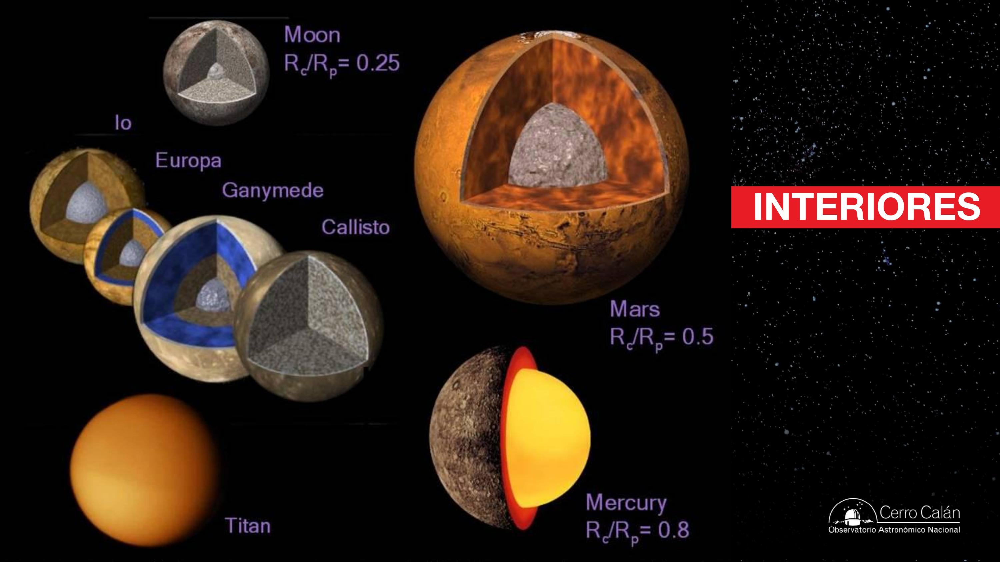
Mensaje central del tour: los mismos procesos físicos, dosis distintas. Tamaño (historia térmica), distancia al Sol (composición), mareas y resonancias (calor extra y estados atrapados) explican la diversidad de superficies. La próxima clase completa el cuadro con el tour por las atmósferas — donde Venus pasa de raro a extremo — y el Módulo 2 responde de dónde vino tanta agua.
Conceptos clave
Tabla de repaso rápido.
| Concepto | Qué es / valor | Por qué importa |
|---|---|---|
| Procesos geológicos | Impactos, volcanismo, tectonismo, erosión | El lente para leer cualquier superficie; cada cuerpo activa un subconjunto |
| Resonancia 3:2 de Mercurio | 3 rotaciones cada 2 órbitas (58 d / 88 d) | Estado atrapado que impide la sincronía; advertencia para exoplanetas |
| Escarpes de contracción | Arrugas globales de 1–2 km en Mercurio | Contracción diferencial núcleo/manto al enfriarse; proceso que la Tierra no tiene |
| Distribución de alturas | Tierra: bimodal · Venus: unimodal | Firma de dos tipos de corteza (con océanos) vs. uno solo |
| Repavimentación catastrófica | Hipótesis: Venus se cubre de lava episódicamente | Explicaría su superficie de solo ~200–300 Ma (5% de su edad) |
| Rotación retrógrada de Venus | 243 días, vector opuesto a la órbita | Requiere torque: el «comodín» del gran impacto; sin rotación no hay dínamo |
| Gran impacto lunar | Cuerpo tamaño Marte contra la proto-Tierra | La captura es imposible sin frenar (momento angular); composición consistente |
| Libración | Excentricidad + inclinación (5°) vs. rotación constante | La Luna síncrona no muestra siempre exactamente la misma cara ni tamaño |
| Superluna | Coincidencia de perigeo + instante de luna llena | Los dos períodos (orbital y de fases) difieren; la coincidencia es cuestión de grado |
| Blueberries (2004) | Esférulas cuya mineralogía exige agua líquida y pH acotado | Cerraron el debate: hubo agua líquida en Marte; queda la pelea océano vs. lagos |
| Pérdida de agua de Marte | Enfrió → sin dínamo → viento solar rompe H₂O → escapa el H | El O sobrante oxida el planeta: Marte es rojo por eso; queda hielo (~20 m globales) en el polo sur |
| Criotectonismo | Cáscara de hielo sobre océano líquido (Europa) | Grietas que se cruzan sin dirección estable; Europa tiene más agua que la Tierra |
| Resonancia de Laplace | Ío:Europa:Ganímedes = 4:2:1 | Sostiene el calentamiento de marea: Ío fundida, Europa con océano, gradiente hacia afuera |
| Titán | Lagos de metano/etano a −170 °C | Único cuerpo además de la Tierra con líquido estable en superficie |
| Meteorización espacial | Partículas solares alteran superficies sin atmósfera | Explica los dos colores de Jápeto; en la Tierra la atmósfera nos blinda |
| Verona Rupes (Miranda) | Acantilado de ~20 km; caída de 12 min a ~200 km/h | Gravedad diminuta ⇒ dinámica exótica; g define la experiencia de cada mundo |
| Diferenciación | Pesado al centro; requiere fusión. Rc/Rp: Luna 0,25 · Marte 0,5 · Mercurio 0,8 | Se infiere por gravedad; la historia térmica (tamaño + mareas) decide |
Exámenes de práctica
10 exámenes de 5 preguntas (3 de alternativas autocorregibles + 2 de respuesta escrita).
- Examen 01Mercurio: interior y superficie
- Examen 02Resonancia 3:2
- Examen 03Venus
- Examen 04La Luna
- Examen 05Marte: historia del agua
- Examen 06Marte: agua hoy y exploración
- Examen 07Europa y las galileanas
- Examen 08Ío y la resonancia de Laplace
- Examen 09Satélites de Saturno
- Examen 10Confines e interiores